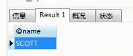

1.事务
1.1 什么是事务
一组DML操作,同时成功或失败
1.2 mysql事务操作
1.mysql默认开启事务自动提交(autocommit)
2.mysql默认将每个DML看做是一个独立的事务
mysql手动提交事务语法:
(1)关闭事务自动提交:
set autocommit = 0;
(2)a、开启事务(平常直接写dml操作是隐式开启事务,所以可以不写) 显式开启事务的方式是: start transaction/begin
b、写dml操作
c、提交/回滚事务(commit / rollback)
1.3 事务的ACID特性
原子性: 事务作为一个整体操作不可分割
一致性: 事务执行前后整体状态不变。
隔离性: 并发事务之间不能产生干扰。
持久性: 事务提交之后数据将持久化。
1.4 并发事务可能产生的问题:(假设有两个事务t1和t2)
(1)脏读: t1读到了t2还未提交的数据。(脏读问题是比较严重的,是首先要解决的)
(2)不可重复读: t1在一次事务中,多次读取某数据时在一定时间范围内读到数据不一致问题。原因:t2在t1读取间隔内
对数据进行修改并提交了事务。
(3)幻读(虚读): t1在一次事务中,多次读取某数据时在一定时间范围内读到数据不一致问题。 原因:由t1对数据进行统一
的改操作时,t2对数据进行了增删操作,导致t1操作未完成，或者t1出现改完数据后仍有少部分数据没改成功。
1.5 事务的隔离级别
读未提交: 事务能读到未提交的数据。无法解决任何问题 (一般不会设置成这个)
读已提交: 事务只能读到已提交的数据。解决脏读问题 (oracle默认使用)
可重复读: 事务在未提交前可以重复读某个数据,该数据始终保持不变。解决脏读和不可重复读(mysql默认)
串行化: 解决所有问题(但会影响并发效率)
1.6 操作
#查看事务的隔离级别:
select @@tx_isolation;
#设置隔离级别:
set [glogal | session] transaction isolation level 隔离级别名称;
set tx_isolation=’隔离级别名称’
其中'隔离级别名称'可以设置为以下四个:
Serializable (串行化)
Repeatable read (可重复读)
Read committed (读已提交)
Read uncommitted (读未提交)
2.存储程序(跟java中的函数(方法)非常类似)
1.存储和运行于服务端的程序
2.优缺点
1.优点
1.效率:速度快(不用做语法语义的校验等,直接运行)
2.简化开发 ( 因为存在于服务端,所以直接直接调用即可,不用写太多代码)
2.缺点
1.占用服务端资源、空间
2.数据迁移比较麻烦
3.分类
1.存储过程: 保存一组Sql操作,支持输入输出参数
# 创建一个存储过程: 根据员工编号查询名称
delimiter //; #这句的含义是设置结束标识为"//",这样就不会在遇到第一个select语句的分号就
觉得整个创建语句结束了,而select语句的分号是必不可少的。
create procedure sel_name(eno int)
begin
select ename from emp where empno = eno;
end //;
#调用该存储过程
call sel_name(7788);
1.1 存储过程的参数的三种模式
IN: 输入型参数。传入的参数默认就是这种模式
OUT: 输出型参数。数据传输参数
INOUT: 输入输出型参数
#使用OUT模式: 根据员工编号查询名称(传出该名称)
delimiter //;
create procedure sel_name2(in eno int,out v_name varchar(20)) #in表示输入型参数,out表示输出型参数,其
#中in是默认模式,所以可以省略不写
begin
select ename into v_name from emp where empno = eno; #将查询出来的结果放到v_name变量里面去
end //;
#调用该存储过程。其中@name表示使用一个临时变量,用来接收传出的输出值("@字符串"即表示一个临时变量)
call sel_name2(7788,@name);
select @name;
结果如下:

#使用INOUT模式。根据员工姓名查询职位 (使用INOUT的要求是输入输出必须是同一个类型,因为in和out都是同一个参数)
delimiter //;
create procedure sel_job(inout v_nj varchar(20)) #inout模式的一个参数既是输入参数也是输出参数。
begin
select job into v_nj from emp where ename = v_nj;
end //;
#调用该存储过程。
set @job='smith'; #这里是sql的给变量赋值的写法
#注意,由于该参数既是输入也是输出,所以给该存储过程传入参数时一定要先给该变量赋值,没有赋任何
#值的变量传进去当然也返回不了想要的结果,因为存储过程里面要用到赋的这个值执行SQL语句。
call sel_job(@job);
select @job;
执行结果:
、视图、索引、数据库设计、自动将数据_files/Image [1].png)
2.存储函数: 保存一组Sql操作,支持返回值
存储过程是通过参数来输出,而存储函数是通过返回值来进行输出的
#根据员工编号查询名称
delimiter //;
create function sel_name3(eno int)
returns varchar(20) #声明返回值类型
deterministic #确定的。(函数为了更好的进行优化而设置的值,即如果传给该函数的是同样的参数值,该函数每次返回
的值都是确定的、不变的、静态的,那就是deterministic。如果每次传相同的参数给该函数,该函数返回
的值还可能发生改变,则这里就写not deterministic。便于底层进行优化)
begin
declare v_name varchar(20); #这里是sql的声明变量。而且这里声明的是返回值的变量,所以要和返回值类型一致
select ename into v_name from emp where empno = eno;
return v_name;
end //;
#调用该存储函数。存储过程其实是当做一个独立的单元来调用的,所以要用call,而函数则可以作为sql语句的一部分来进调用
select sel_name3(7788);
#(存储)函数和(存储)过程区别:
#1.关键字不同
#2.过程通过IN,OUT,INOUT三种模式实现输入和输出,函数通过返回值实现输出。
#3.过程是作为一个独立单元使用,而函数作为语句一部分使用。
3.触发器: 执行一组sql。什么时候执行是由事件(insert/delete/update)驱动,会自动调用,不支持传参
注意:触发器不能添加太多,否则会严重影响性能
、视图、索引、数据库设计、自动将数据_files/Image [2].png)
#设置一个触发器, 在stu表每删除一条记录时,先把这条记录插入到student表
delimiter //;
create trigger tri_del #触发器是由时间驱动,所以不能传参,没有参数列表,所以不像函数和过程一样有一对"()"
before delete #指定什么时间执行以及什么事件执行
on stu for each row #行级触发器,即每一行都绑定一个触发器。MySQL只有行级触发器,oracle还有表级触发器
begin #old new。old就是以前有的,要delete的或者要被update的记录new就是update后的记录或者新insert的记录。
insert into student values(old.sid,old.sname,old.cid);
end //;
#用这条语句就能触动这个触发器。
delete from stu where sid = 20;
5.SQL的流程控制的相关语法(用存储过程来实现)
#sql作为一种编程语言,自然也会有流程控制的语法
#if
#用if实现成绩分级。(成绩分级: >=80 A >=60 B C)
delimiter //;
create procedure score(s int)
begin
#设置变量
declare v_level varchar(10); #这里是sql的声明变量
if s>=80 then
set v_level='A'; #这里是sql的给变量赋值
elseif s>=60 then
set v_level='B';
else
set v_level='C';
end if;
select v_level;
end //;
#调用该存储过程
call score(86);
#循环: sql有三种循环: while / loop / repeat
# while实现 (1+...+100)
delimiter //;
create procedure sum1()
begin
declare sum int;
declare i int;
set sum=0;
set i=1;
while i<=100 do
set sum=sum+i; #变量给变量赋值也是用set
set i = i+1;
3
select sum;
end //;
#调用该存储过程
call sum1();
#loop
delimiter //;
create procedure sum2()
begin
declare sum int;
declare i int;
set sum=0;
set i=1;
lip:loop #因为可能有多层循环,这里是给这层循环起了个别名为lip
set sum=sum+i;
set i = i+1;
if i>100 then
leave lip; #if条件成立则结束lip这层循环
end if;
end loop;
select sum;
end //;
#调用该存储过程
call sum2();
#repeat
delimiter //;
create procedure sum3()
begin
declare sum int;
declare i int;
set sum=0;
set i=1;
repeat
set sum=sum+i;
set i = i+1;
until i>100 #注意这里没有分号,这句和下一句其实是连着的
end repeat;
select sum;
end //;
#调用该存储过程
call sum3();
4.视图
虚拟表,没有真实物理存在,在使用过程中依据基表动态生成。
视图不能独立存在,需要依附于表(可以是多张表)。
通过视图可以增删改底层的基表的数据。
视图主要应用于查询,尽量不要增删改。
1.视图创建
create view view_name as 查询的sql语句;
with check option:保证视图数据安全,不允许修改视图创建条件字段。
举例如下:
、视图、索引、数据库设计、自动将数据_files/Image [3].png)
with check option是为了保证修改视图时,不允许修改视图的筛选字段。其实就是一个约束
create or replace 是指创建或者代替,如果该视图存在则替换掉存在的视图
、视图、索引、数据库设计、自动将数据_files/Image [4].png)
2.视图销毁
drop view view_name;
视图的优点:
1.安全性(隐藏某些不想让用户看到的字段)
2.简化开发。(直接用视图里的数据,不用每次写那么长的sql)
3.数据定制化 (可以任意的组合多张表中需要的、经常使用的一些字段)
5.索引
为了提升查询效率而创建的数据结构。 B+树
索引需要独立空间来维护(需要占用资源)。
表实现增删改操作时,索引也需要进行相应的维护。
模糊查询会影响性能,如果某一列上有索引,再使用模糊查询,那么索引就会失效,查找方式就跟索引无关了,会直接全表遍历
不同的角度下索引有不同的划分
根据索引的字段数可划分为: 单列索引/组合(多列)索引 ; (多列索引是指多个列组成一个索引)
根据索引列的数据的不同可以划分为: 一般索引/唯一索引 (唯一索引即列上面的每个数据都必须是唯一的)
索引列如何选择?如何给表选择索引列
1.表数据量较大 (表数据量较小时添加索引不一定能提升查找效率。因为有索引时要查两个东西,首先要去索引树上找到
记录所在的叶子节点,然后在根据叶子节点给的信息定位到该记录,这样的时间耗费不一定小于直接遍
历整张表。而且索引树还要单独占用空间)
2.选择高基数列 (高基数列即在某个(或某些)字段列里面的数据尽可能的是不重复的数据,比如工资就不太合适建立
索引,因为一个公司工资相同的人太多)
3.索引列最好是不经常变化的列,因为索引树的维护也有开销
索引语法:
create (unique) index index_name on tbname(字段,...); (没有unique就是添加一般索引,有unique就是添加
唯一索引。添加唯一索引时要保证列上的数据是不重复的)
drop (unique) index index_name on tbname;
存储引擎会影响数据库底层索引的存储方式。不同的存储引擎B+树的叶子节点上的内容也不一样:
MYISAM:叶子节点存储的是其在B+树上的id和记录的地址
InnoDB:叶子节点存储的是其在B+树上的id和记录的信息
sql查询的性能指标
、视图、索引、数据库设计、自动将数据_files/Image [5].png)
、视图、索引、数据库设计、自动将数据_files/Image [6].png)
下图是上图中第一条sql语句的执行结果
、视图、索引、数据库设计、自动将数据_files/Image [7].png)
为什么用empno查询的效率要比用ename查询的效率高?
因为empno是主键,我们在创建主键时,其实系统就自动添加了一个索引。
6.数据库设计
1.数据库设计三大范式 (虽然数据库的范式有六种,但平时设计只需遵循前三种即可。但有时候遵循了这些范式,查
询效率反而低了,所以有时候也不遵循它,三大范式也只是作为一个参考,并不是强制规定)
1.1 1NF: 所有的域(字段)都应该是原子性的。即每个字段都是不可拆的
1.2 2NF: 所有的非主键字段必须与主键字段相关,不能与主键的部分相关(联合主键才有所谓的"主键的部分")。
2NF讲的主要是: 一张表尽量只描述一个事物,不要描述多个事物。
所有的非主键字段必须与主键字段相关: 也就是没太大关系的字段不要放在一张表里,以免插入一条记录时重
复的字段太多,造成空间的浪费。特别是和主键没关系的非主键字段,就放到别的表里去。比如下面的一张表
中,uid(用户id)主键和后面的bname(购买的图书名),price(价格),count(数量)都没有太大关系,应该不要放在
一张表里。
、视图、索引、数据库设计、自动将数据_files/Image [8].png)
所以可以将以上字段分成三张表如下:
、视图、索引、数据库设计、自动将数据_files/Image [9].png)
不能与主键(联合主键)的部分相关: 比如下面这张sc表的主键是由(sid,cid)组成的联合主键, 而cname是课程号,
课程号只与cid(课程id)有关,与sid(学号)无关,所以这就是与主键的部分相关了,这种字段不要放在这张表里。
、视图、索引、数据库设计、自动将数据_files/Image [10].png)
1.3 3NF: 非主键字段必须与主键直接相关,而不能间接相关。(描述的是依赖传递性问题,即不能有传递依赖)
举例: 如果有A、B、C、D四个字段, 其中A是主键, B和C字段与主键直接相关,而D字段与B字段直接相关,这也
就是与A字段是间接相关的关系,这样D字段就不应该放在这张表中。或者换一种说法,B依赖于A, 而D字段
依赖于(B,C)两个字段, 则D字段是传递依赖于A,D字段不应在此表中。
也可以说非主键字段必须与主键直接相关,而不能与其他非主键字段直接相关。
2.ER图
在ER图中有如下四个成分：
矩形框：表示实体，在框中记入实体名。
菱形框：表示联系，在框中记入联系名。
椭圆形框：表示实体或联系的属性，将属性名记入框中。对于主属性名，则在其名称下划一下划线。
连线：实体与属性之间；实体与联系之间；联系与属性之间用直线相连，并在直线上标注联系的类型。（对于一对一联系，要在两个实体连线方向各写1； 对于一对多联系，要在一的一方写1，多的一方写N；对于多对多关系，则要在两个实体连线方向各写N,M。)
PowerDesigner的安装与破解
(1)安装
解压之后找到下图中的.exe程序双击安装
、视图、索引、数据库设计、自动将数据_files/Image [11].png)
点击next后,进入如下界面,下拉选好如下内容后点击next。
、视图、索引、数据库设计、自动将数据_files/Image [12].png)
进入如下界面,修改安装目录为如下路径。当然也可以选择不改。
、视图、索引、数据库设计、自动将数据_files/Image [13].png)
点击next后进入如下界面,这个界面是指 要安装哪些图表或模型是可以直接生成代码的,当然它默认是这样勾选,我们也
不要动它,让它这样勾选,保持默认的就行。直接点击next。
、视图、索引、数据库设计、自动将数据_files/Image [14].png)
接下来的步骤一直点击next即可,即可完成安装。安装完成之后点击finish即可。
该软件也会在系统的开始菜单创建自己的一个文件夹
、视图、索引、数据库设计、自动将数据_files/Image [15].png)
(2)破解
因为这个压缩包本身是自带汉化和破解的,但是这个安装包的汉化做的不好,所以这里只破解
找到如下目录中的破解文件。只有pdflm15.dll是破解用的文件,其他文件都是汉化用的。
找到后,复制pdflm15.dll
、视图、索引、数据库设计、自动将数据_files/Image [16].png)
然后找到刚才安装PowerDesigner时的安装目录,因为我安装时修改了默认的安装目录,所以安装目录如下图:
直接将刚才复制的pdflm15.dll文件粘贴在这个目录即可,会出现如下提示,直接选择"替换目标中的文件"即可
、视图、索引、数据库设计、自动将数据_files/Image [17].png)
到此就算破解完毕了。
(3)使用
该软件默认没有桌面快捷方式,所以可以从自动创建好的开始菜单文件夹里打开。选择下图的框中的软件打开
、视图、索引、数据库设计、自动将数据_files/Image [18].png)
进入软件后,点击菜单栏 File-->New Model-->然后进入如下界面,选择如图所示的模型,并给该模型起一个名字,
点击OK即创建了一个模型。
这里选择的是概念数据模型,是用来画ER图的,画完之后可以直接生成代码
、视图、索引、数据库设计、自动将数据_files/Image [19].png)
出现如下界面
、视图、索引、数据库设计、自动将数据_files/Image [20].png)
主要用如下工具直接在白板上绘制即可。主要就是用图中框出的这两个工具,一个实体,一个关系。
、视图、索引、数据库设计、自动将数据_files/Image [21].png)
画出一个实体后双击编辑。Name是表(实体)的名字,是用来描述的。而Code则是到时候模型转换为代码时
就是拿的Code里的内容作为表名的值,而不是拿的Name的值,所以Code最好是用英文。
、视图、索引、数据库设计、自动将数据_files/Image [22].png)
接下来选择Attributes设置表的字段。Name和Code的含义和上图说的一样,只不过这里表示的是字段名。
Data Type是字段的数据类型,这里的数据类型和MySQL的写法不一样,不过看着英文还是能找到和
MySQL一一对应的数据类型。Length是选择数据类型时选填的,有的数据类型要填,比如Variable character(即varchar)。
M是非空的意思,P是主属性的意思,D是Display,显示的意思
、视图、索引、数据库设计、自动将数据_files/Image [23].png)
设置好两张表后,开始设置关系,如果所示
、视图、索引、数据库设计、自动将数据_files/Image [24].png)
通过双击该关系,同样可以设置一些关系的基本属性。先设置关系的Name和Code
、视图、索引、数据库设计、自动将数据_files/Image [25].png)
接着设置关系的关键属性,是一对一、一对多还是多对多。同时还可以设置"多"这边是允许0到n个,还
时1到n个。
、视图、索引、数据库设计、自动将数据_files/Image [26].png)
最终绘制好的图如图所示:
、视图、索引、数据库设计、自动将数据_files/Image [27].png)
接下来开始把模型转换为数据库中实际的表: (选择生成物理模型)
、视图、索引、数据库设计、自动将数据_files/Image [28].png)
这里DBMS选择MySQL, Name和Code的名字可以改一下,便于和原先的概念模型项目
区分(当然不改也可以,认得到就行)。再点击确定即可
、视图、索引、数据库设计、自动将数据_files/Image [29].png)
接着会出现如下框,如果为空则说明生成代码没有报错
、视图、索引、数据库设计、自动将数据_files/Image [30].png)
或者看下面这个,没有出现红色说明没有报错
、视图、索引、数据库设计、自动将数据_files/Image [31].png)
下图就是生成的表,可以看出,和原先的ER图(概念模型)不一样的是,学生课程关系也变成了一张表,
因为它是多对多的关系。
、视图、索引、数据库设计、自动将数据_files/Image [32].png)
双击上图中的某张表即可查看它的信息,选择Preview可以看见创建该表的代码,如下图:
、视图、索引、数据库设计、自动将数据_files/Image [33].png)
如果要直接生成整个ER图创建成一个数据库的代码,选择如图所示的方法生成数据库。
、视图、索引、数据库设计、自动将数据_files/Image [34].png)
接着看到如下,选择生成的数据库保存的路径以及修改一下导出的文件的文件名, 再点击确定即可。
、视图、索引、数据库设计、自动将数据_files/Image [35].png)
生成后会有两个提示框,一个提示生成文件的路径,一个如下,这是正常现象,不用管
、视图、索引、数据库设计、自动将数据_files/Image [36].png)
打开文件路径看到如下文件,
、视图、索引、数据库设计、自动将数据_files/Image [37].png)
这个文件可直接导入到MySQL中生成数据库。用记事本打开可看到如下形式。当然这里生成的都是表,数据库的库名
还是要自己在MySQL中预先创建。
、视图、索引、数据库设计、自动将数据_files/Image [38].png)